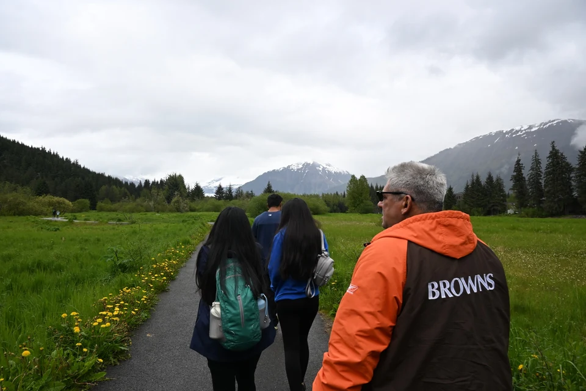
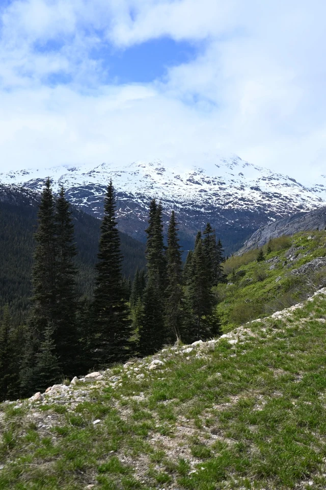
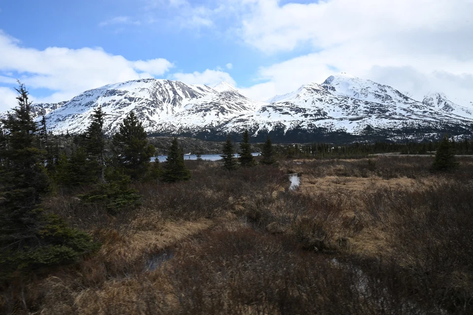
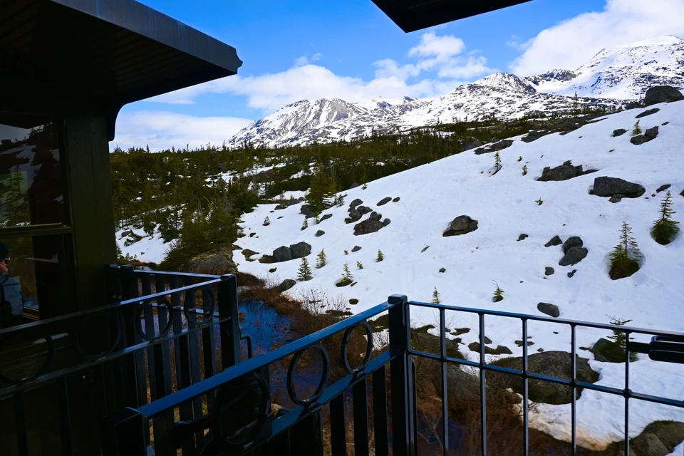
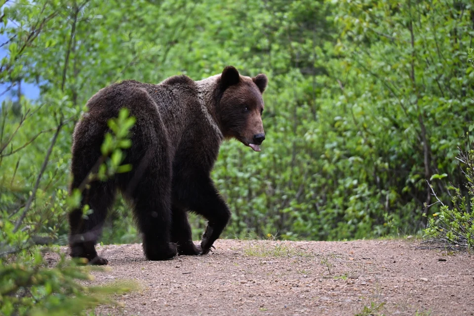

Photos from my travels
Alaska
Mountain views, train rides, wildlife, and trails from my travels in Alaska.
14 photographs · All photos
 Mountains
MountainsAlpine lake in White Pass, Alaska

On the trailMountain hike in Juneau, Alaska
 Mountains
MountainsSnowy mountains in Alaska
 On the trail
On the trailRainforest trail in Juneau, Alaska
 By rail
By railRiding the White Pass train in Skagway
 By rail
By railWhite Pass & Yukon Route near Skagway
 Wildlife
WildlifeCoastal brown bear in Hoonah, Alaska
 Wildlife
WildlifeBald eagles in Ketchikan, Alaska
 By rail
By railSnow beside the White Pass railway

MountainsWhite Pass mountain views, Alaska
 By rail
By railWhite Pass train by the water in Skagway

MountainsWhite Pass mountains beneath a blue sky

By railSnowy views from the White Pass train

WildlifeCoastal brown bear near Hoonah, Alaska
Another place to explore
 35 photographs
35 photographsWashington
Lake Crescent, Sol Duc Trail, Sol Duc Falls, and Deer Lake.
Explore Washington →14 photographsAlaska
Mountain views, train rides, wildlife, and trails from my travels in Alaska.
Explore Alaska → 13 photographs
13 photographsBritish Columbia
Quiet corners and colorful gardens in Victoria.
Explore British Columbia →